Accede y Forkea el Repositorio
Ve al repositorio oficial en GitHub y familiarízate con el proyecto. Revisa el README y la estructura del proyecto. Luego dale click a Fork y crear un fork del repositorio.
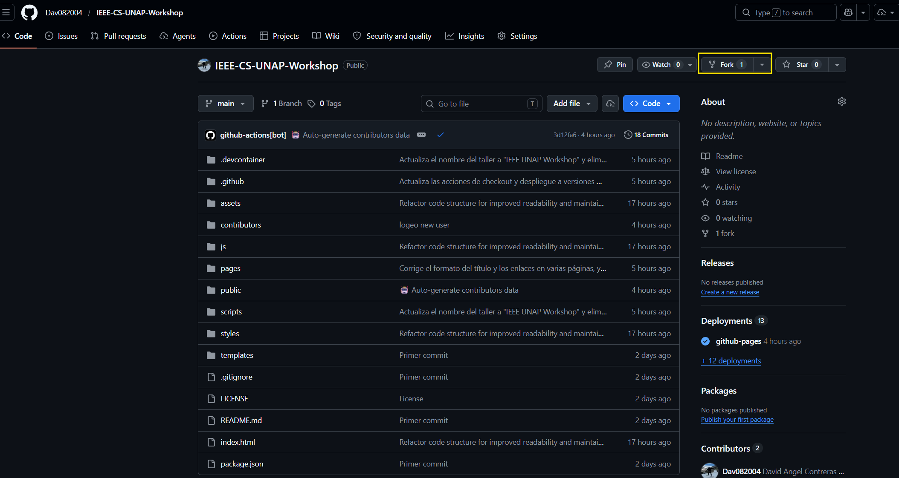
# URL del repositorio
https://github.com/Dav082004/IEEE-CS-UNAP-WorkshopHaz Fork del Repositorio
Haz clic en el botón "Fork" en la esquina superior derecha del repositorio. Esto creará una copia del proyecto en tu cuenta de GitHub.
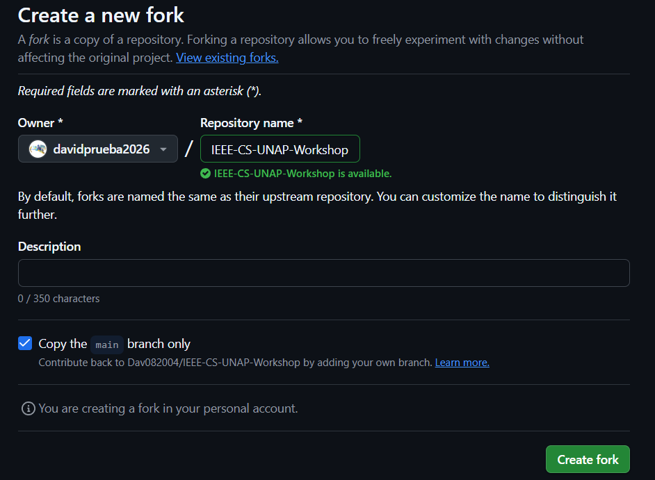
El fork te permite trabajar en tu propia copia sin afectar el original.
Verifica tu Fork
Verificar que se forkeo correctamente y está en tu perfil. Debe decir tu_perfil / IEEE-CS-UNAP-Workshop y mostrar que fue forkeado del repositorio principal. Esto te permitirá realizar cambios sin afectar el repositorio original.
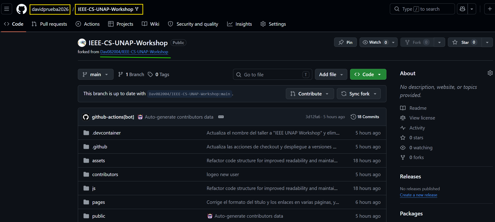
El repositorio debe mostrar "forked from Dav082004/IEEE-CS-UNAP-Workshop"
Crear Codespace
Haz clic en el botón "Code" verde y luego ve a "Codespaces" y dale clic a "Create codespace on main". Esto te dará un editor de código remoto que ya está preconfigurado con LiveServer, Image Preview y Git.
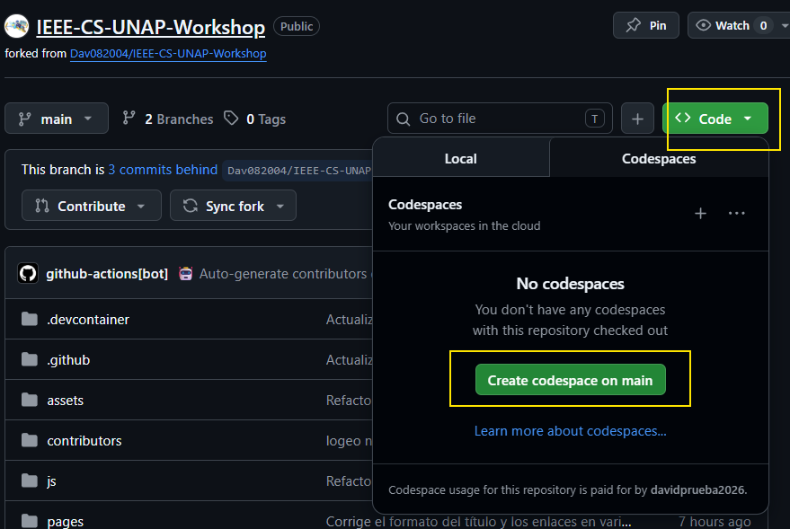
El Codespace incluye todas las extensiones necesarias preinstaladas
Verificar Estado Inicial
Una vez dentro del Codespace, verifica que estás en la rama main de tu repositorio forkeado
usando git status. También puedes usar git branch --all para ver
todas las ramas disponibles. Solo debería aparecer la rama main.
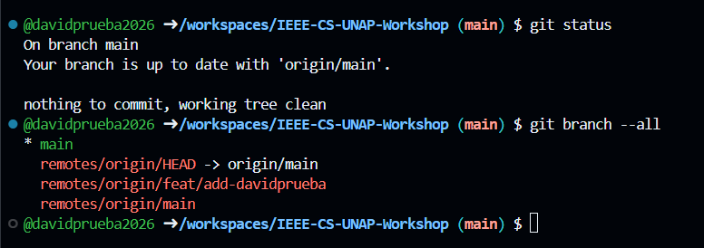
# Verificar estado actual
git status
# Ver todas las ramas
git branch --allCrear Nueva Rama
Para seguir el GitFlow correctamente, crea una nueva rama específica para tu contribución.
Usa git checkout -b feat/new-profilexde (reemplaza con tu nombre).
Verás que donde decía (main) ahora aparece el nombre de tu nueva rama.
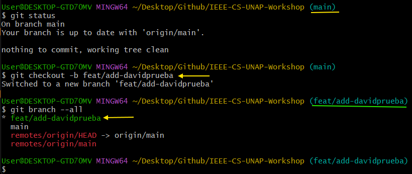
# Crear y cambiar a nueva rama
git checkout -b feat/new-tu-nickname
# Verificar cambio de rama
git branchCrear tu Archivo JSON
Ahora que estás en una nueva rama, crea un archivo tu-nickname.json
dentro de la carpeta contributors. Agrega tu información: nombre,
nickname, GitHub, LinkedIn, Instagram (opcionales), imagen (puedes usar tu avatar
de GitHub agregando .png), descripción y hasta 4 hobbies.
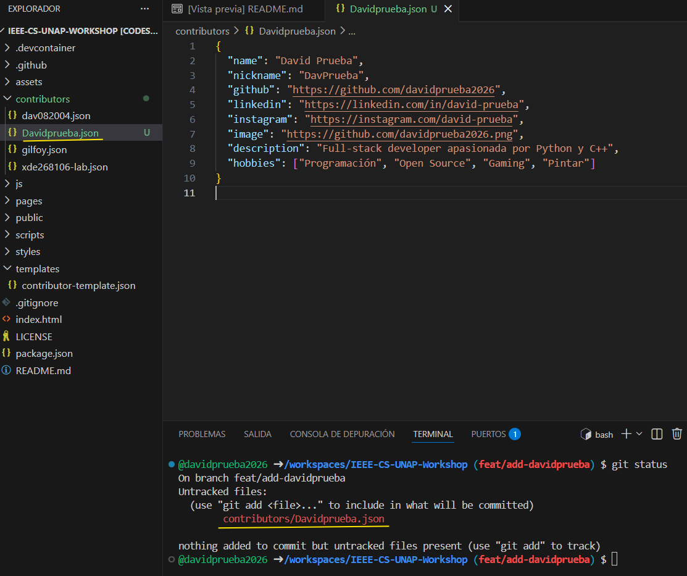
Puedes encontrar el template en
templates/contributor-template.json. Recuerda que JSON no permite
comentarios, así que debes quitar las líneas con // del template.
{
"name": "Tu Nombre",
"nickname": "TuUsuario",
"github": "https://github.com/TuUsuario",
"linkedin": "https://www.linkedin.com/in/tu-linkedin",
"instagram": "https://www.instagram.com/tu-instagram/",
"image": "https://github.com/TuUsuario.png",
"description": "Breve descripción sobre ti.",
"hobbies": ["Hobby1", "Hobby2", "Hobby3", "Hobby4"]
}Preparar y Hacer Commit
Usa git add . para preparar todos los cambios para el commit.
Luego realiza el commit con un mensaje descriptivo usando
git commit -m "mensaje del commit".
Después de esto, git status mostrará que la rama está limpia.
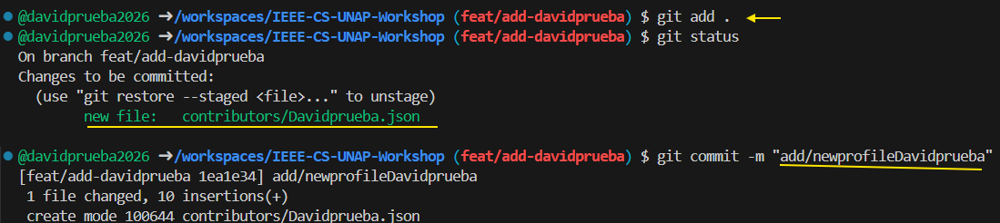
# Preparar cambios
git add .
# Hacer commit
git commit -m "feat: add new profile for [tu-nickname]"
# Verificar estado
git statusSubir Cambios a GitHub
Ahora que tu commit está listo, sube los cambios a tu repositorio forkeado usando
git push origin feat/new-profilexde (reemplaza con el nombre de tu rama).
Esto subirá tu nueva rama con todos los cambios a GitHub.
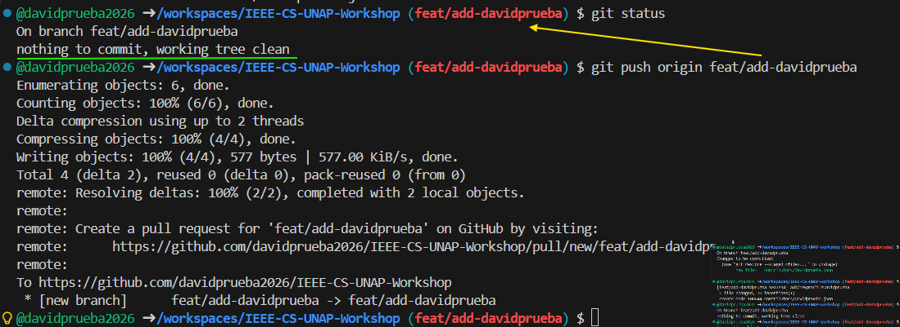
# Subir rama al repositorio forkeado
git push origin feat/new-tu-nicknameComparar y Pull Request
Verifica que ahora tienes 2 ramas en tu repositorio. GitHub te permitirá "Comparar y hacer Pull Request". Puedes ver que el último autor del cambio fuiste tú. Haz clic en el botón verde "Compare & pull request".
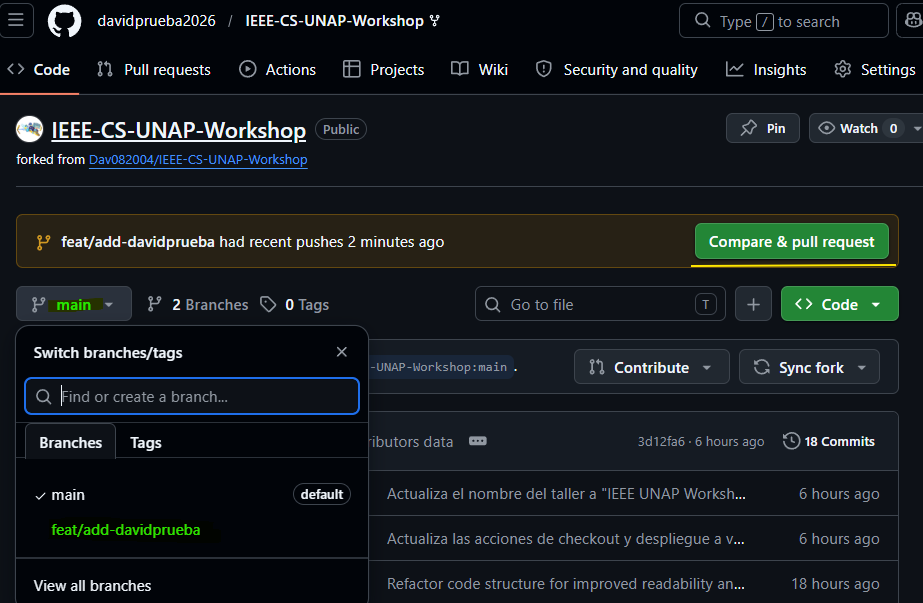
GitHub detecta automáticamente tu nueva rama y te permite crear el PR
Crear Pull Request
Verifica que el Pull Request se hará entre el repositorio principal y la rama main, mergeando los cambios de tu repo forkeado y tu nueva rama. Agrega un mensaje descriptivo explicando tus cambios y haz clic en "Create Pull Request".
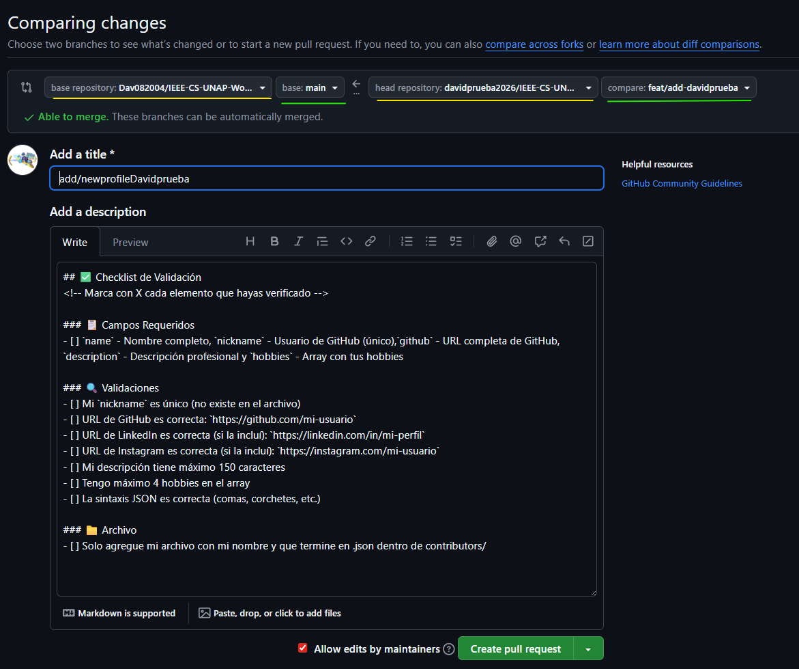
Revisar Cambios en Código
Puedes revisar todos los cambios realizados en código antes de finalizar el Pull Request. Esto te permite verificar que todo esté correcto.
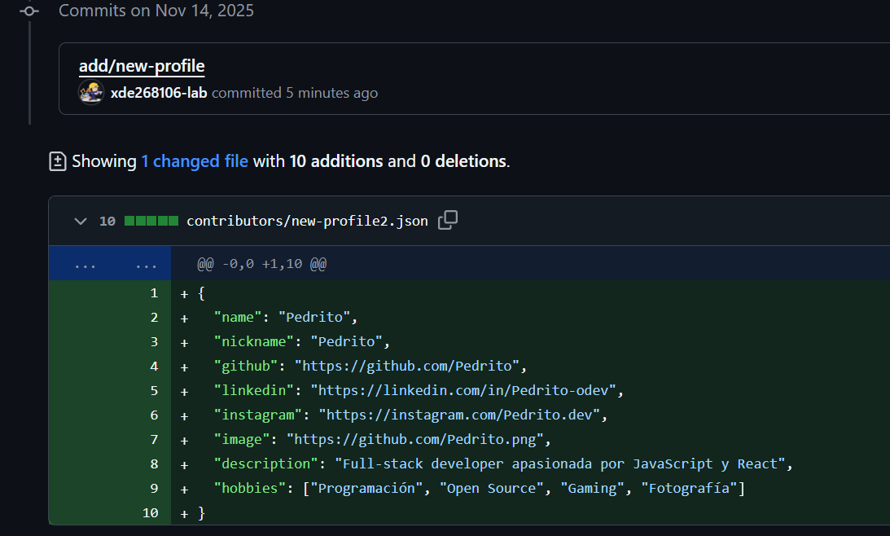
Pull Request Abierta
Tu PR está ahora abierta para revisión. Las personas con roles suficientes pueden comentar, rechazar o aprobar la PR.
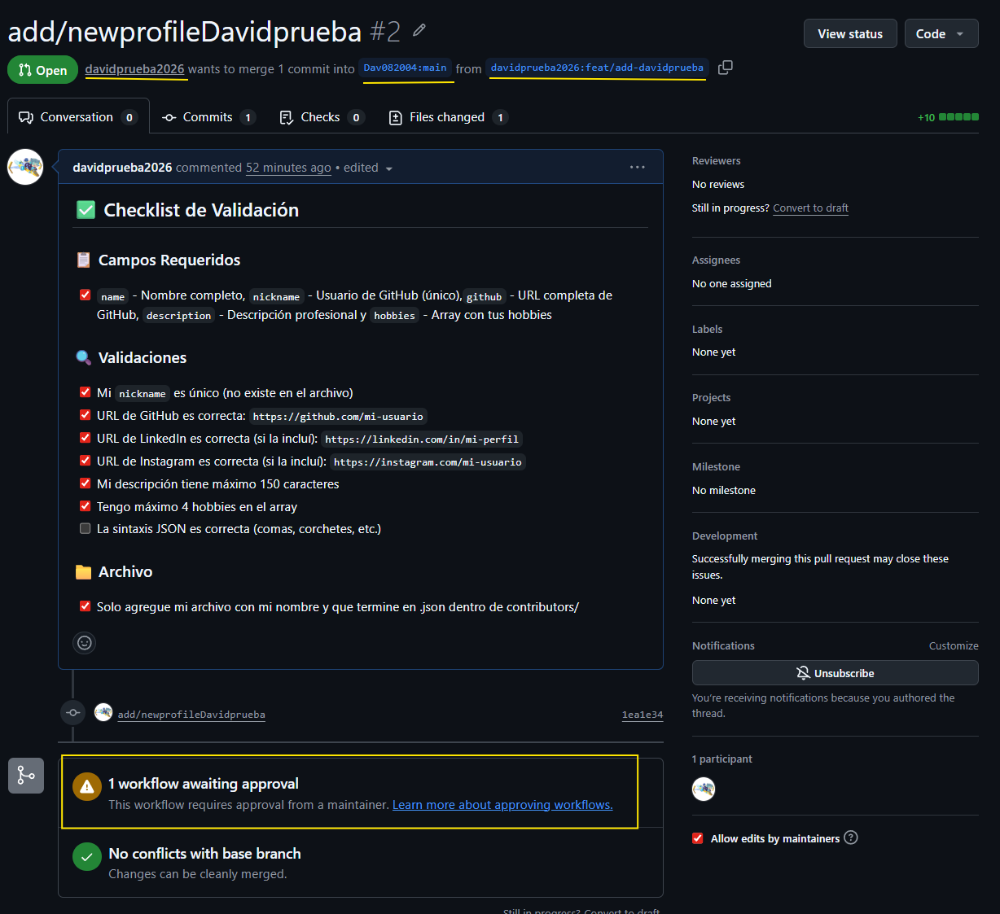
Aprobación y Merge
Cuando no hay conflictos y todo está correcto, un revisor puede aprobar la PR y hacer el merge. Tus cambios serán integrados al repositorio principal.
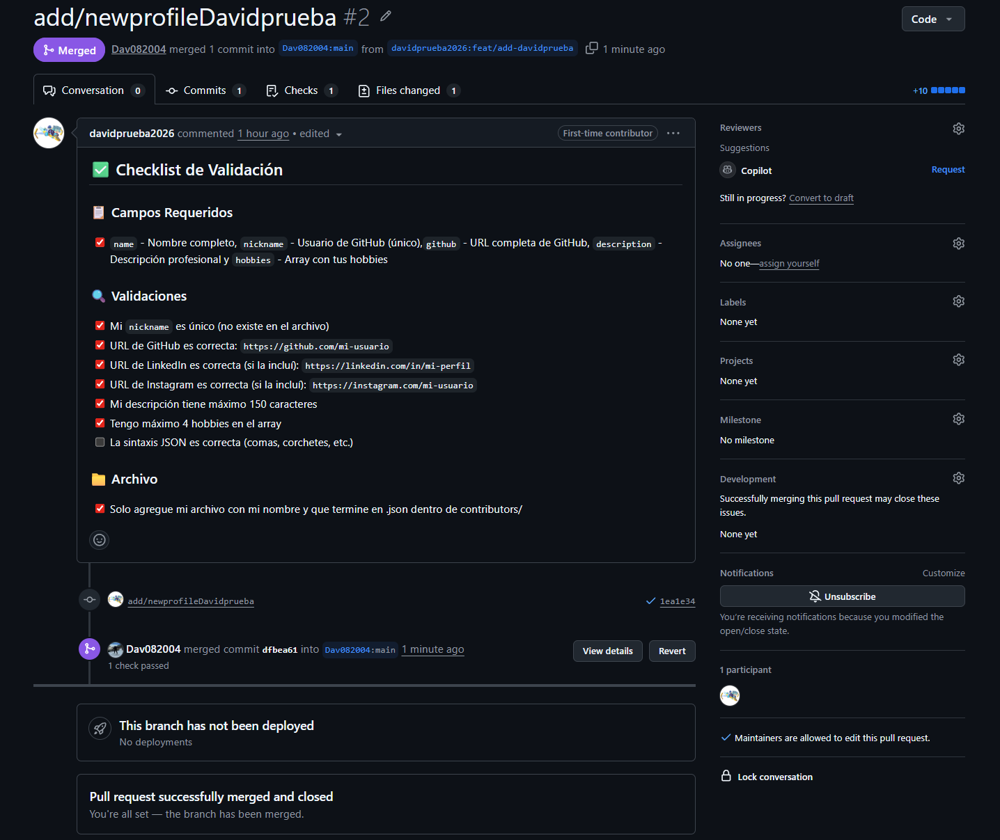
Historial de Commits
Puedes ver el historial de commits donde aparece tu commit junto con el commit del auditor que aprobó los cambios. Tu contribución forma parte oficial del proyecto.
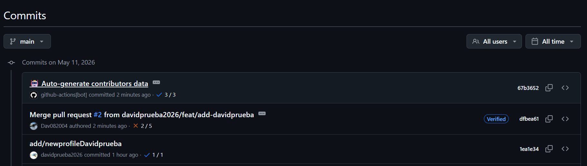
¡Felicitaciones!
¡Tu contribución ha sido exitosa! Ahora apareces en la página colaborativa con tu perfil, información y enlaces. Eres oficialmente parte del proyecto.
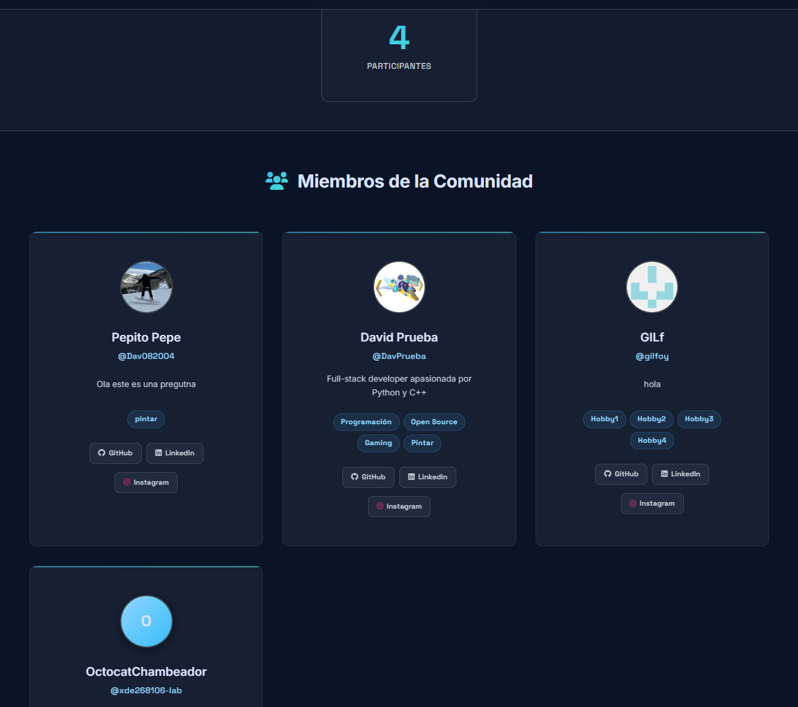
¡Has completado tu primera contribución!
- ✅ Fork realizado correctamente
- ✅ Codespace configurado y usado
- ✅ Rama nueva creada siguiendo GitFlow
- ✅ Cambios realizados y commitados
- ✅ Pull Request creado y aprobado
- 🎉 ¡Apareces en la página!
Sistema de Validación Automática
Validación de Formato
El sistema verifica que el formato de tu contribución sea correcto y que todos los campos requeridos estén presentes.
Auto-merge
Si todas las validaciones pasan, tu PR será automáticamente mergeado y aparecerás en la página principal.
Corrección de Errores
Si hay errores, recibirás comentarios específicos sobre qué corregir. Puedes hacer nuevos commits para solucionarlos.
Ejemplos de Contribución
Ejemplo Correcto
{
name: "Ana María González",
nickname: "anagonzalez",
github: "https://github.com/anagonzalez",
linkedin: "https://linkedin.com/in/ana-gonzalez-dev",
description: "Estudiante de Ingeniería de Sistemas especializada en desarrollo web",
hobbies: ["Programación", "Lectura", "Yoga", "Fotografía"]
},